ILLUSTRATIONS
A collection of comic-based storytelling and monochrome illustrations made in Procreate, exploring contrast, composition, and expressive line work.
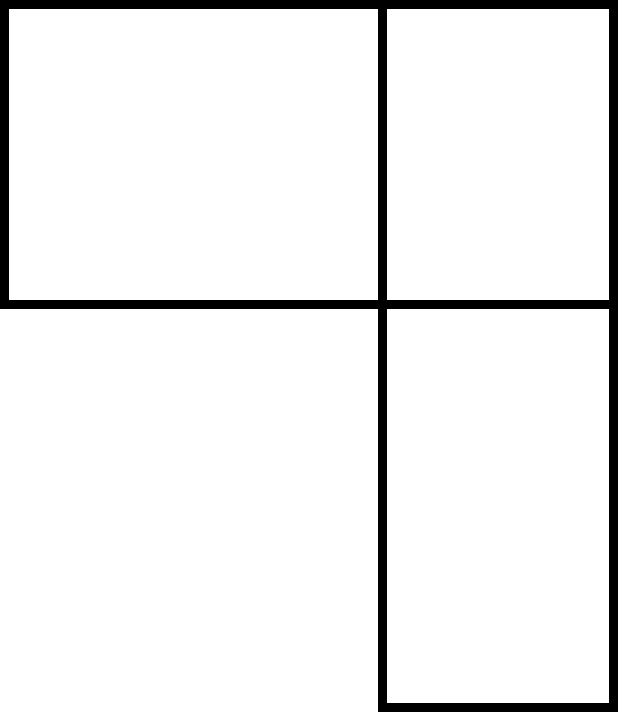
Comic
Single-color comic focused on storytelling through contrast and composition.

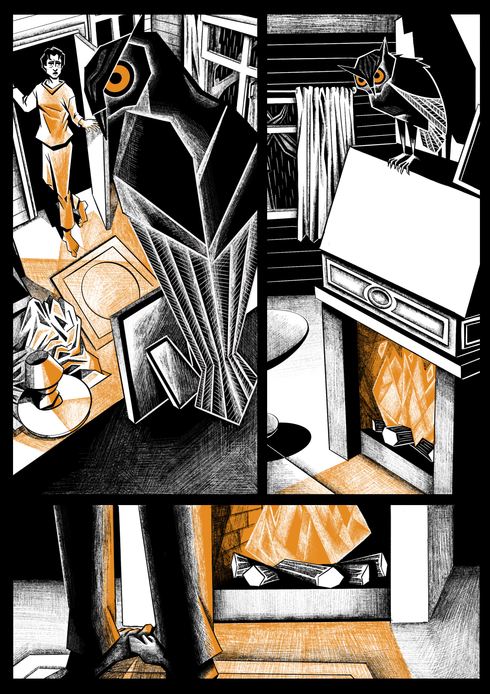
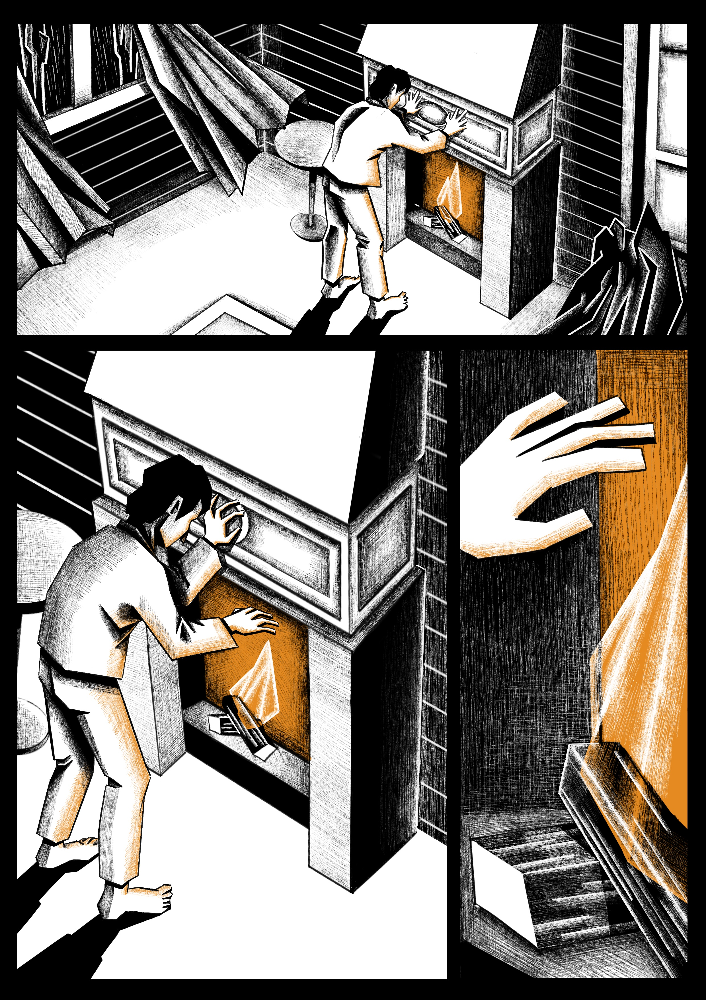
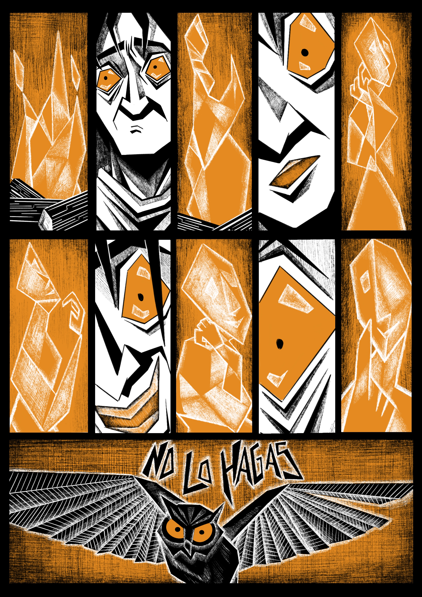
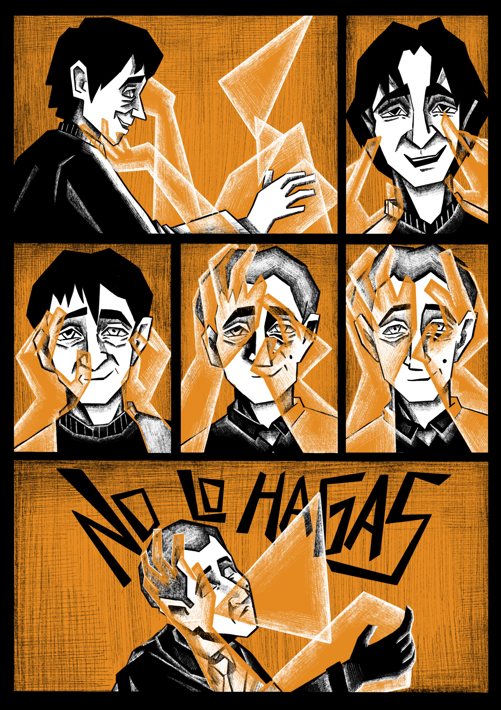
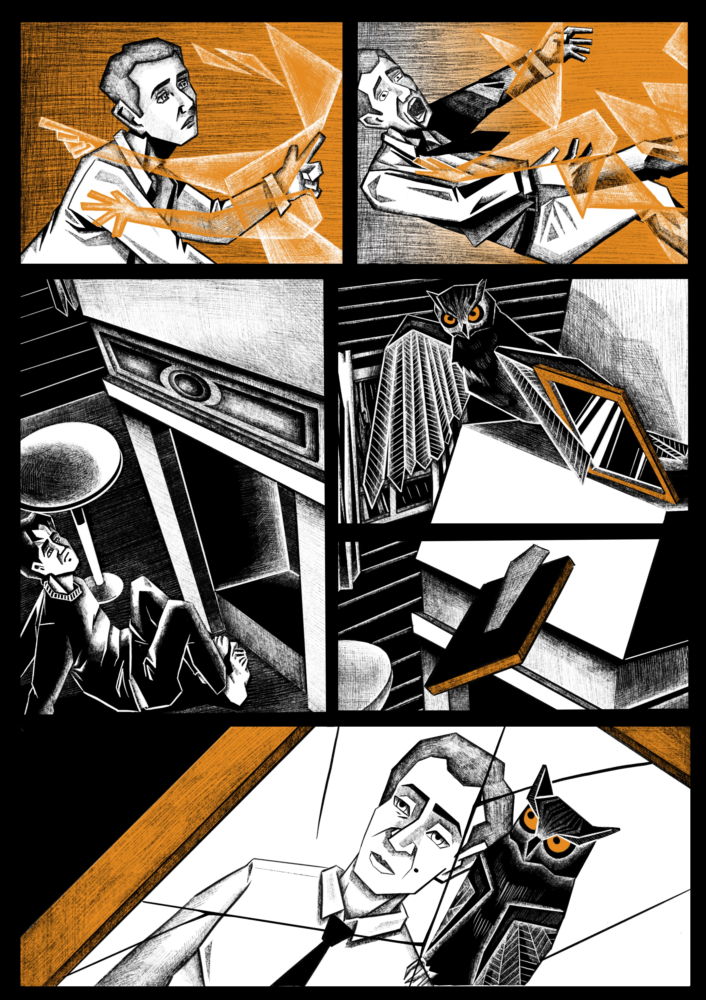
Illustrations
A collection of black and white illustrations exploring dark moods and strong contrasts.
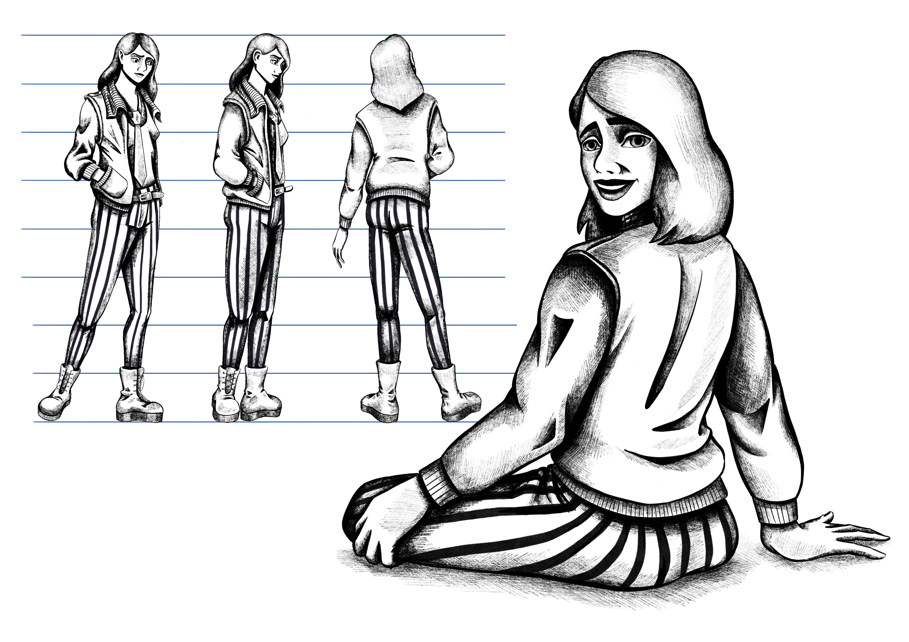
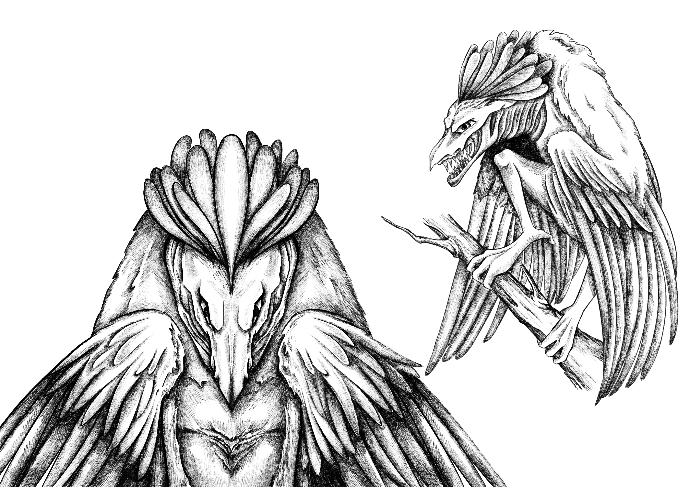
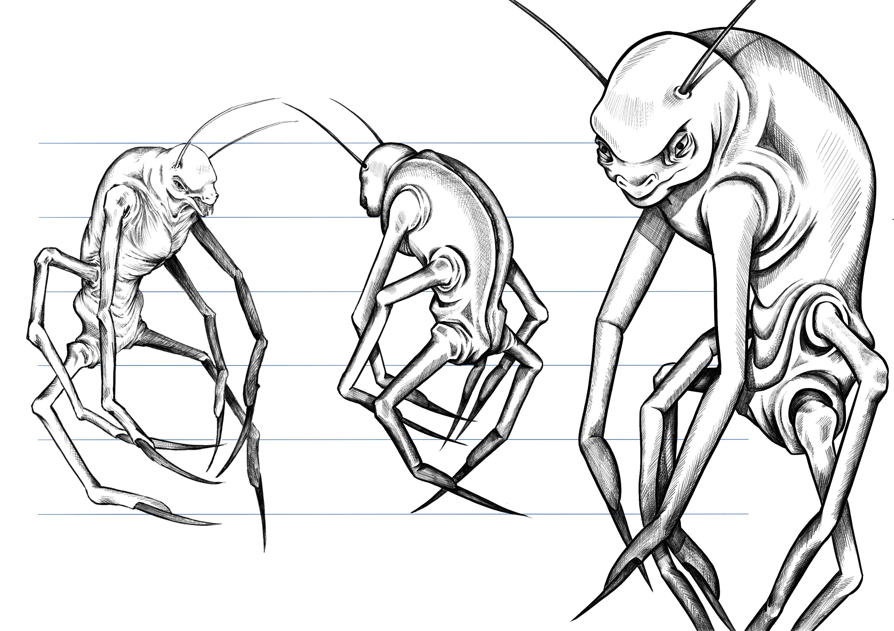
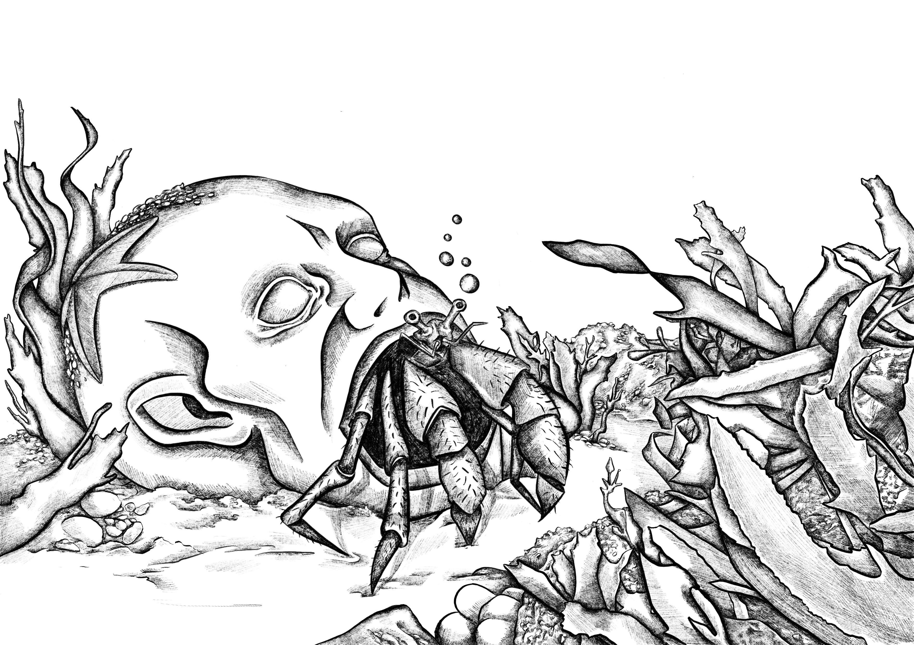

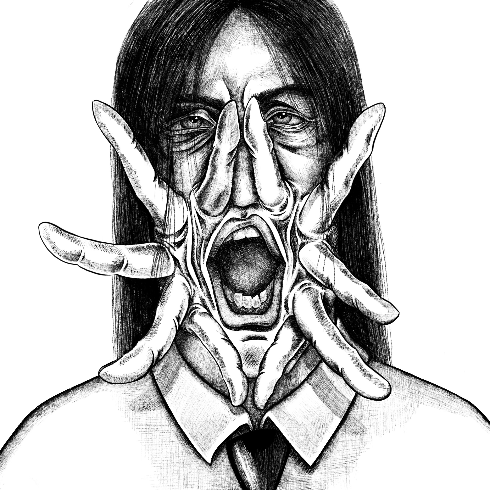